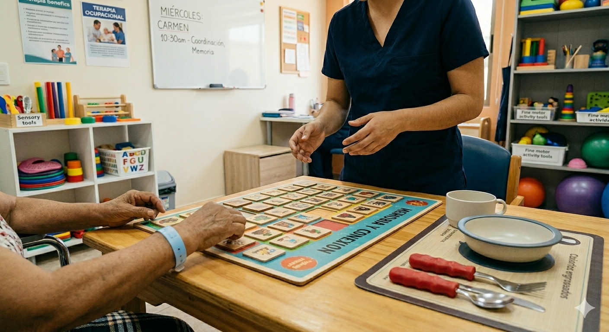

Terapia ocupacional en personas mayores
Mantenerse activo es fundamental para la autonomía. En este post exploramos 5 ejercicios clave...
Leer más
Mantenerse activo es fundamental para la autonomía. En este post exploramos 5 ejercicios clave...
Leer más